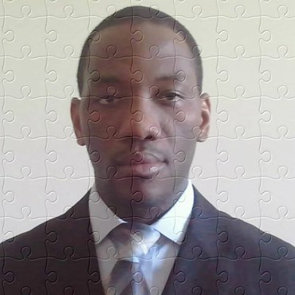

About Me
I was always fascinated by computer, electronics so when the opportunity came to learn and understand how programs work I didn't hesitate. I have absorbed codes for three months, balancing from homework to projects in a time constraint basis while alternating anxiety and joy after completion and landing as a Full Stack Developer. Before the program, I have worked in a variety of jobs as associate, supervisor gaining 9+ years of experience in customer service (Currently working in the airlines/aviation industry at Piedmont Airlines). I am bilingual and very motivated to take on any challenge; ready to learn new technology and use my skills as Junior Dev. I am also skilled in Final Cut Pro, Adobe Photoshop, and Website developing with a background in BSBA-Economics from UNCC.